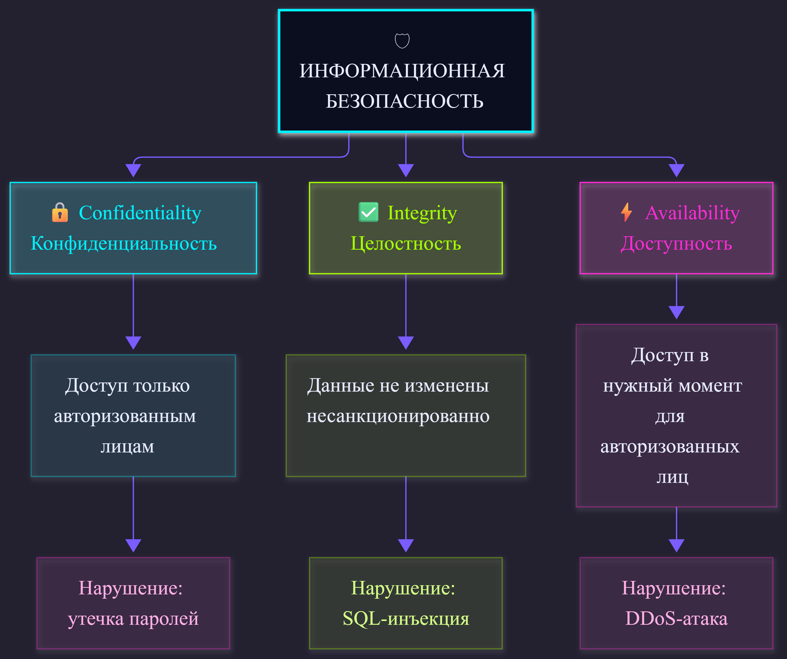
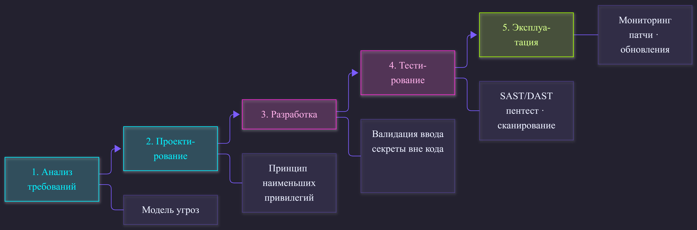

Информационная
безопасность
Разработка и управление программным обеспечением
План занятия
Базовые понятия
ИБ, триада CIA, угроза / уязвимость / риск / атака
15 мин
Классификация угроз
Внешние / внутренние, человеческие / технические / природные
15 мин
Механизмы защиты
Правовой, организационный, программно-аппаратный уровни
15 мин
ИБ в разработке ПО
Secure SDLC, OWASP Top 10, принцип наименьших привилегий
10 мин
Тест + творческое задание
Самопроверка и аудит безопасности учебного проекта
25 мин
Что такое информационная безопасность?
Объекты защиты
- Информация (данные пользователей, исходный код, БД)
- Носители информации (серверы, устройства, облака)
- Каналы передачи данных
- Пользователи и их учётные записи
Ключевая цепочка
- Угроза — потенциальная возможность ущерба
- Уязвимость — слабое место в системе
- Риск — вероятность реализации + ущерб
- Атака — реализованная угроза
Триада CIA

Классификация угроз

Социальная инженерия и фишинг
Что это?
Манипулирование людьми с целью получения конфиденциальной информации или выполнения действий, наносящих ущерб.
Признаки фишингового письма
- Срочность и давление («срочно!», «аккаунт будет удалён»)
- Подозрительный адрес отправителя
- Просьба перейти по ссылке и ввести данные
- Орфографические и грамматические ошибки
- Вложения от неизвестных отправителей
успешных кибератак начинаются с человеческого фактора — фишинга и социальной инженерии.
Защита: обучение персонала, 2FA, проверка отправителя, «zero trust».
Три уровня защиты информации

Базовые механизмы защиты
Аутентификация
Подтверждение подлинности: пароль, 2FA, биометрия
Авторизация
Предоставление прав доступа после аутентификации
Шифрование
Симметричное и асимметричное — защита данных при передаче и хранении
Резервное копирование
Обеспечение доступности и восстановления после сбоев
Secure SDLC — путь безопасной разработки

Принципы безопасной разработки
- Принцип наименьших привилегий — каждая сущность получает минимально необходимые права
- Валидация и санитизация ввода — защита от SQL-инъекций и XSS
- Не хардкодить секреты — пароли и ключи в переменных окружения / секрет-менеджерах
- OWASP Top 10 — инъекции, нарушение контроля доступа, криптографические ошибки и др.
- Нормативная база РФ — ФЗ-149, ФЗ-152, ФЗ-187
Проверка понимания
Проверка понимания · часть 2
| Атака | Мера |
|---|---|
| SQL-инъекция | Валидация и параметризация запросов |
| Фишинг | Обучение персонала, 2FA |
| Ransomware | Регулярное резервное копирование |
Конфиденциальность → утечка паролей; Целостность → подмена данных; Доступность → DDoS.
Утечка учётных данных → несанкционированный доступ. Исправление: убрать секрет из кода и истории, секрет-менеджер, смена пароля, сканирование секретов в CI.
Творческое задание
Дано
Гипотетическое веб-приложение «Студенческий портал» с уязвимостями:
- пароли хранятся в открытом виде
- нет разграничения ролей
- форма не валидирует ввод
- нет резервных копий
Задача группы
- Определить нарушенные компоненты CIA
- Предложить меру устранения (уровень защиты)
- Сформулировать правило безопасной разработки
Критерии (10 баллов)
CIA — 3 · мера — 3 · принцип — 2 · презентация — 2
Итоги
CIA
Конфиденциальность · Целостность · Доступность
Угрозы
Внешние / внутренние × человеческие / технические / природные
Защита
Правовой · организационный · программно-аппаратный уровни
Secure SDLC
Безопасность — сквозной процесс на всём жизненном цикле ПО